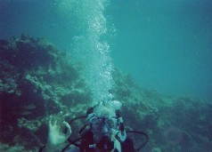
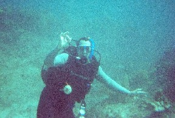

We are very pleased to report a record number of submissions to the conference. After a rigorous review process we have been able to accept 15% of the submissions for oral presentation and 27% for poster presentation.
Please take a look at the programme for the conference and the list of poster presentations.
Key West provides a superb location for this workshop, and the weather at Key West in January is expected to be very pleasant. The workshop timetable will focus on morning and early evening sessions, allowing ample free time in the afternoons for scientific discussion or to take advantage of local attractions such as scuba diving,snorkelling, wave runners, parasailing, fishing, sailing and golf.
|
 |
 |